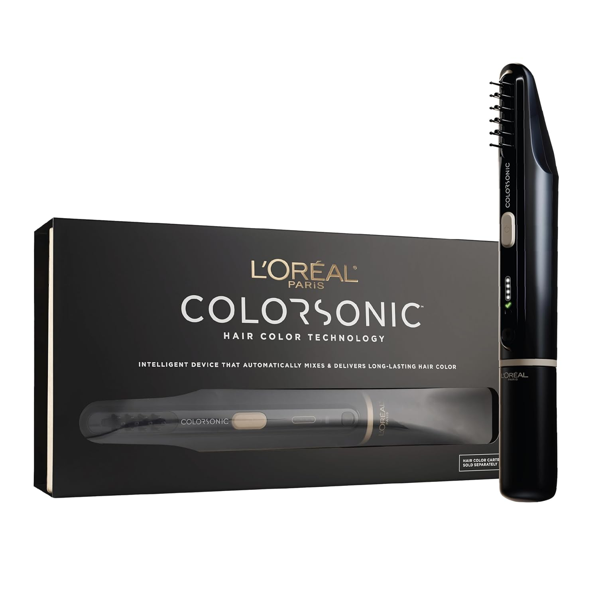
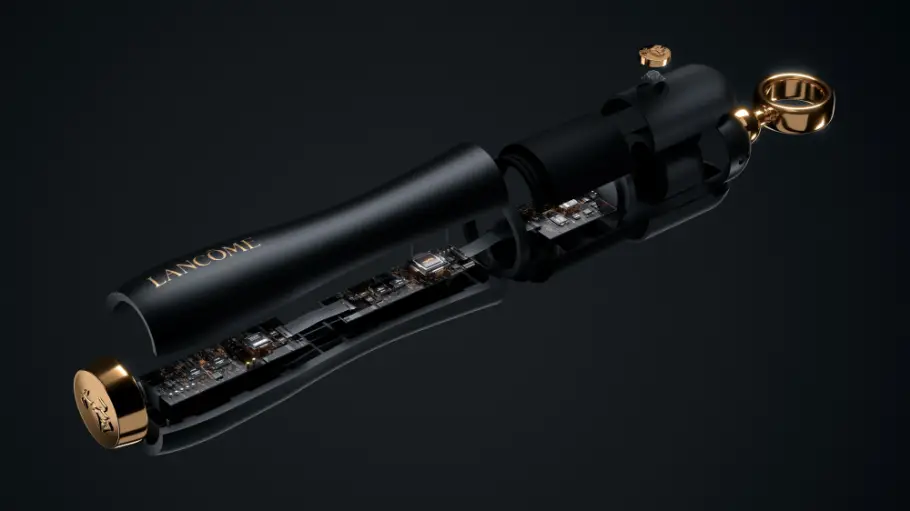
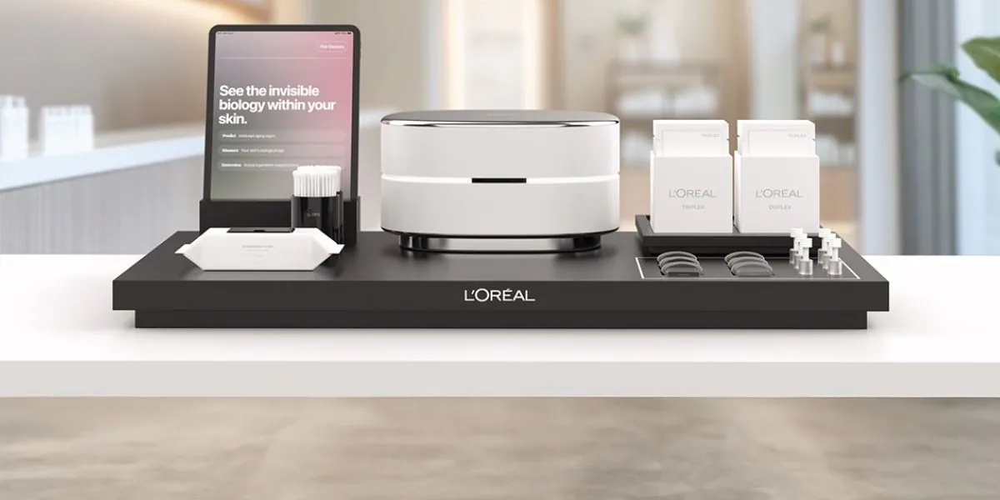

HungerQs Wearable EGG Device
Jan 2025 - May 2026Problem Statement
Gastric disorders affect millions globally, yet current diagnosis methods are invasive and expensive. HungerQs addresses this gap with a non-invasive wearable electrogastrography (EGG) device that enables continuous monitoring of gastric electrical activity, providing real-time insights into digestive health.
Design Process
- Requirements definition and specifications development
- Hardware architecture planning with multi-channel acquisition
- Circuit design and simulation
- Prototype development and iterative testing
- Validation against clinical standards
Circuit Design
- Instrumentation amplifier with high CMRR for artifact rejection
- Analog filtering (0.016 - 0.25 Hz bandpass)
- ADC integration for digital signal acquisition
- Power management for wearable deployment
- PCB layout optimized for noise immunity
Testing & Validation
- Signal quality analysis and noise characterization
- Frequency response validation
- Hardware-software integration testing
- Real-world accuracy assessment
- User experience evaluation
Software & Signal Processing
- Python-based signal processing pipeline
- MATLAB simulations for algorithm development
- Machine learning models for pattern recognition
- Data visualization and real-time monitoring dashboard
- GitHub repository with documented code
.jpeg)
.jpeg)


.jpeg)
Technologies Used
SolidWorks Circuit Design PCB Layout Python MATLAB Signal Processing Machine Learning Jira CAPML'Oréal Augmented Beauty Development Internship
Jun 2025 - Aug 2025Overview
As an Augmented Beauty Development Intern at L'Oréal, I supported the development and commercialization activities for cutting-edge consumer beauty devices. This internship provided hands-on experience in product development, quality validation, and cross-functional collaboration.
Consumer Device Development
- Supported design and manufacturability assessment for beauty devices
- Executed quality validation and mechanical/electrical testing
- Collaborated on performance characterization activities
- Conducted sensitive SolidWorks CAD design improvements
- Optimized manufacturing processes for scaling
Prototyping & Testing
- Prototype development and iterative refinement
- Performance metrics collection and analysis
- User experience validation testing
- Reliability assessment under various conditions
- Documentation of technical specifications
Project Management
- Project planning and deliverable coordination
- Work Breakdown Structures (WBS) development
- Design Failure Mode and Effects Analysis (DFMEA)
- Milestone tracking and status reporting
- Agile methodologies and sprint planning
Cross-functional Collaboration
- Worked with R&D, Manufacturing, and Marketing teams
- Facilitated communication between departments
- Supported commercialization roadmap development
- Contributed to go-to-market strategy discussions
- Maintained traceability and documentation




Technologies & Methodologies
SolidWorks Product Development DFMEA Project Management Agile Quality Validation Cross-functional TeamsWalnut Oleosome Research Project
Sep 2025 - May 2026Research Objective
Investigated the oxidative stability of walnut oleosomes as a plant-based bioactive ingredient for functional food applications. This research combined advanced analytical techniques with rigorous experimental design to evaluate ingredient quality and stability under various conditions.
Experimental Methods
- HPLC (High-Performance Liquid Chromatography) analysis
- Gas Chromatography (GC) for fatty acid profiling
- Particle size analysis and zeta potential measurement
- Spectrophotometry for bioactive compound quantification
- Microbial analysis and shelf-life studies
Data Analysis
- Comprehensive data collection and organization
- Statistical analysis using MATLAB and Python
- Oxidative stability trend identification
- Quality metrics assessment
- Comparative analysis across storage conditions
Results & Conclusions
- Quantified antioxidant efficacy of walnut oleosomes
- Established optimal storage conditions
- Identified degradation mechanisms
- Recommendations for food industry application
- Findings published in peer-reviewed journal
Publication
Acevedo-Estupinán, M.V., Rizzi, M., Hanson, W., Decker, E., & Walnut oleosomes oxidation stability. In Prep. Sep. 2026
Research contributions included experimental design, data collection, analysis, and manuscript preparation.